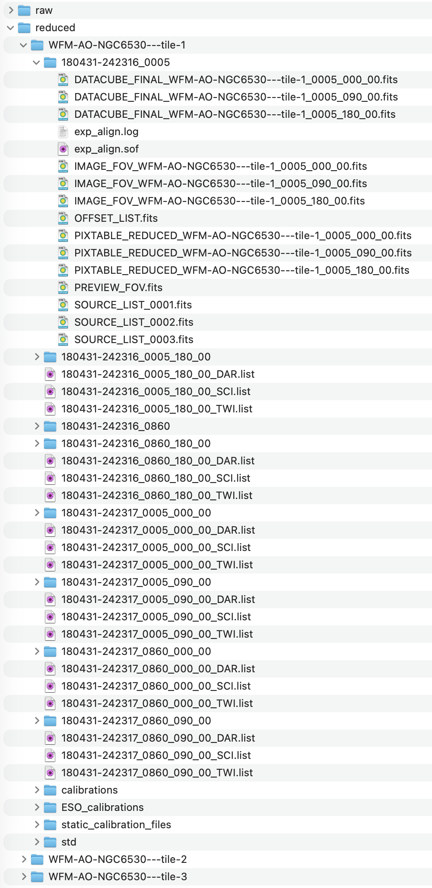

2. MUSEreduce
MUSEreduce.musereduce is an easy-to-use python Class used as wrapper for the VLT/MUSE data reduction pipeline and does not replace the core functionalities of the pipeline provided by ESO. In order to function properly with this version of MUSEreduce.musereduce we recommend to install the pipeline version v2.8.9 found under: https://www.eso.org/sci/software/pipelines/muse/. This version of MUSEreduce.musereduce has been tested with version v2.8.9 of the data reduction pipeline.
To run MUSEreduce.musereduce all of the raw data must be stored in a folder named user_path/raw/. The script has to point to user_path by setting the keyword rootpath of the json config file to the parent directory.
- class MUSEreduce.musereduce(configfile, debug=False)[source]
- Kwargs:
- configfile
str A
jsonconfigfile for musereduce, where all the parameters are set.- debug
bool, (optional), default:None True:MUSEreduce.musereduceruns in debug mode and ESORex will not be executed. All products must be available. It can be used for testing the creation of folder, and creating the.soffiles
- configfile
2.1. The basic folder structure
If auto_sort_data = True in the config file and MUSEreduce.musereduce is executed, the basic folder structure is created in the rootpath. The raw data will be automatically sorted according to the xml asocciation file information. As example, we consider that three OBs were observed: WFM-AO-NGC6530—tile-1, WFM-AO-NGC6530—tile-2, and WFM-AO-NGC6530—tile-3. Within each OB are multiple observations with rotation angles of 0, 90, and 180 deg and exposure times of 5 and 860s. The folder structure looks the following:

Each OB has its own folder in the reduced folder with the following nomenclature:
Each individual exposure (e.g., 180431-242316_0005_180_00) following the structure: RADEC_EXPTIME_ROTANGLE_COUNTER. RADEC are the coordinates in sexagesimal, EXPTIME is the exposure time in seconds and the ROTANGLE is the rotation angle in degrees. The COUNTER is needed if there are two exposures with the same configuration.
Each individual pointing per exposure time (e.g., 180431-242316_0860) following the structure: RADEC_EXPTIME.
The calibrations contain DARK, TWILIGHT, and SCIENCE, in case the calibration files are created from the raw calibration files provided by ESO Therefore, the calibration steps must be executed.
The ESO_calibrations is the folder, into which the reduced calibration files delivered by ESO (if available) are copied.
The static_calibration_files, is the folder, into which the statics (part of the MUSE data reduction pipeline installation) are copied.
The folder std will contain the reduced data of the standard star.
Note
The calibration files and the standard star are the same per individual OB and are only needed once.
2.2. The config file
The json configuration file is needed to run MUSEreduce.musereduce. This file contains all of the data reduction setup. The json configuration file can be found in the main directly of MUSEpack and can be downloaded here.
{
"global": {
"pipeline_path": "path_to_pipeline/muse/2.8.9/",
"rootpath": "path_to_data_folder",
"n_CPU": -1,
"mode": "WFM-NOAO",
"auto_sort_data": true,
"auto_create_OB_folders": true,
"using_specific_exposure_time": false,
"using_ESO_calibration": true,
"renew_statics": false,
"dither_multiple_OBs": false,
"OB_list": [],
"exp_list": []
},
"cleanup": {
"execute": false,
"include_std": false,
"include_combined": false,
"include_calibrations": false
},
"calibration":{
"execute": true,
"dark": false,
"esorex_kwargs_bias": null,
"esorex_kwargs_dark": null,
"esorex_kwargs_flat": null,
"esorex_kwargs_wavecal": null,
"esorex_kwargs_lsf": null,
"esorex_kwargs_twilight": null,
"create_sof": true
},
"sci_basic":{
"execute": true,
"execute_sci": true,
"execute_std": true,
"skyreject": "15.,15.,1",
"skylines": "5577.339,6300.304",
"esorex_kwargs": null,
"create_sof": true
},
"std_flux":{
"execute": true,
"esorex_kwargs": null,
"create_sof": true
},
"sky":{
"execute": true,
"modified": false,
"modified_continuum": true,
"sky_field": "auto",
"fraction": 0.05,
"ignore": 0.05,
"method": "model",
"esorex_kwargs": null,
"create_sof": true
},
"sci_post":{
"execute": true,
"autocalib": null,
"subtract_sky": true,
"raman": false,
"esorex_kwargs": null,
"create_sof": true
},
"dither_collect":{
"execute": true
},
"exp_align":{
"execute": true,
"srcmin": 5,
"srcmax": 80,
"esorex_kwargs": null,
"create_sof": true
},
"exp_combine":{
"execute": true,
"weight": "exptime",
"esorex_kwargs": null,
"create_sof": true
}
}
The file config file is structured the following. If keywords are directly controlling toggles of the MUSE data reduction pipeline their naming is identical.
2.3. Utility methods
The following methods are routines to support the MUSEreduce.musereduce, needed to execute the various data reduction steps as it is suggested in the MUSE data reduction pipeline. They are documented here for completness.
- MUSEreduce._get_filelist(self, data_dir, filename_wildcard)[source]
This module collects the necessary file lists from folders.
- MUSEreduce._call_esorex(self, exec_dir, esorex_cmd, sof, esorex_kwargs=None)[source]
This module calls the various ESOrex commands and gives it to the terminal for execution.
- Args:
- Kwargs:
- esorex_kwargs
str Additional keywords that should be passed for special processing. These should be passed as one string
- esorex_kwargs
- MUSEreduce._create_ob_folders(self)[source]
This module creates the neccessary OB folders, from the raw data
- MUSEreduce._sort_data(self)[source]
This module reads the headers of all of the raw data and sorts it accordingly. It also assigns the correct calibration files to the exposures
- MUSEreduce._bias(self, exp_list_SCI, exp_list_DAR, exp_list_TWI, create_sof, esorex_kwargs=None)[source]
This module calls ESORex’
muse_bias- Args:
- exp_list_SCI
list The list of all associated science files including their category read from the fits header
- exp_list_DAR
list: The list of all associated dark files including their category read from the fits header
- exp_list_TWI
list: The list of all associated twilight files including their category read from the fits header
- create_sof
bool: True:bias.sofis created and populatedFalse:bias.sofis not created and needs to be provided by the user
- exp_list_SCI
- Kwargs:
- esorex_kwargs:
str Additional keywords that should be passed for special processing. These should be passed as one string
- esorex_kwargs:
- MUSEreduce._dark(self, exp_list_SCI, exp_list_DAR, create_sof, esorex_kwargs=None)[source]
This module calls ESORex’
muse_dark- Args:
- exp_list_SCI
list The list of all associated science files including their category read from the fits header
- exp_list_DAR
list: The list of all associated dark files including their category read from the fits header
- create_sof
bool: True:bias.sofis created and populatedFalse:bias.sofis not created and needs to be provided by the user
- exp_list_SCI
- Kwargs:
- esorex_kwargs:
str Additional keywords that should be passed for special processing. These should be passed as one string
- esorex_kwargs:
- MUSEreduce._flat(self, exp_list_SCI, exp_list_TWI, create_sof, esorex_kwargs=None)[source]
This module calls ESORex’
muse_flat- Args:
- exp_list_SCI
list The list of all associated science files including their category read from the fits header
- exp_list_TWI
list: The list of all associated twilight files including their category read from the fits header
- create_sof
bool: True:bias.sofis created and populatedFalse:bias.sofis not created and needs to be provided by the user
- exp_list_SCI
- Kwargs:
- esorex_kwargs:
str Additional keywords that should be passed for special processing. These should be passed as one string
- esorex_kwargs:
- MUSEreduce._wavecal(self, exp_list_SCI, exp_list_TWI, create_sof, esorex_kwargs=None)[source]
This module calls ESORex’
muse_wavecal- Args:
- exp_list_SCI
list The list of all associated science files including their category read from the fits header
- exp_list_TWI
list: The list of all associated twilight files including their category read from the fits header
- create_sof
bool: True:bias.sofis created and populatedFalse:bias.sofis not created and needs to be provided by the user
- exp_list_SCI
- Kwargs:
- esorex_kwargs:
str Additional keywords that should be passed for special processing. These should be passed as one string
- esorex_kwargs:
- MUSEreduce._lsf(self, exp_list_SCI, exp_list_TWI, create_sof, esorex_kwargs=None)[source]
This module calls ESORex’
muse_lsf- Args:
- exp_list_SCI
list The list of all associated science files including their category read from the fits header
- exp_list_TWI
list: The list of all associated twilight files including their category read from the fits header
- create_sof
bool: True:bias.sofis created and populatedFalse:bias.sofis not created and needs to be provided by the user
- exp_list_SCI
- Kwargs:
- esorex_kwargs:
str Additional keywords that should be passed for special processing. These should be passed as one string
- esorex_kwargs:
- MUSEreduce._twilight(self, exp_list_SCI, exp_list_TWI, create_sof, esorex_kwargs=None)[source]
This module calls ESORex’
muse_twilight- Args:
- exp_list_SCI
list The list of all associated science files including their category read from the fits header
- exp_list_TWI
list: The list of all associated twilight files including their category read from the fits header
- create_sof
bool: True:bias.sofis created and populatedFalse:bias.sofis not created and needs to be provided by the user
- exp_list_SCI
- Kwargs:
- esorex_kwargs:
str Additional keywords that should be passed for special processing. These should be passed as one string
- esorex_kwargs:
- MUSEreduce._science_pre(self, exp_list_SCI, create_sof, esorex_kwargs=None)[source]
This module calls ESORex’
muse_scibasic- Args:
- Kwargs:
- esorex_kwargs:
str Additional keywords that should be passed for special processing. These should be passed as one string
- esorex_kwargs:
- MUSEreduce._std_flux(self, exp_list_SCI, create_sof, esorex_kwargs=None)[source]
This module calls ESORex’
muse_standard- Args:
- Kwargs:
- esorex_kwargs:
str Additional keywords that should be passed for special processing. These should be passed as one string
- esorex_kwargs:
- MUSEreduce._sky(self, exp_list_SCI, create_sof, esorex_kwargs=None)[source]
This module calls ESORex’
muse_sky- Args:
- Kwargs:
- esorex_kwargs:
str Additional keywords that should be passed for special processing. These should be passed as one string
- esorex_kwargs:
- MUSEreduce._modified_sky(self, exp_list_SCI, create_sof, esorex_kwargs=None)[source]
This module calls ESORex’
muse_skywith the modified continuum and line subtraction as described in Zeidler et al. 2019.- Args:
- Kwargs:
- esorex_kwargs:
str Additional keywords that should be passed for special processing. These should be passed as one string
- esorex_kwargs:
- MUSEreduce._scipost(self, exp_list_SCI, create_sof, OB, esorex_kwargs=None)[source]
This module calls ESORex’
muse_scipost- Args:
- Kwargs:
- esorex_kwargs:
str Additional keywords that should be passed for special processing. These should be passed as one string
- esorex_kwargs:
- MUSEreduce._dither_collect(self, exp_list_SCI, OB)[source]
This module collects the individual dither exposures for one OB to be combined in the steps:
MUSEreduce._exp_alignandMUSEreduce._exp_combine- Args:
Kwargs:
- MUSEreduce._exp_align(self, exp_list_SCI, create_sof, OB, esorex_kwargs=None)[source]
This module calls ESORex’
muse_exp_align- Args:
- Kwargs:
- esorex_kwargs:
str Additional keywords that should be passed for special processing. These should be passed as one string
- esorex_kwargs:
- MUSEreduce._exp_combine(self, exp_list_SCI, create_sof, esorex_kwargs=None)[source]
This module calls ESORex’
muse_exp_combine- Args:
- Kwargs:
- esorex_kwargs:
str Additional keywords that should be passed for special processing. These should be passed as one string
- esorex_kwargs:
2.4. History
Added in version 0.1.0: Executes the MUSE reduction pileline in the correct order
Added in version 0.1.1: introducing only one calibration file folder per OB
Added in version 0.1.2: choosing the illumination file closest to the observation
Added in version 0.1.3: selecting the files for the different master file creations
Added in version 0.1.4: minor corrections
Added in version 0.1.5: looping order changed. each module loops by itself
Added in version 0.1.6: always checking if calibration files already exist
Added in version 0.1.7: Choosing between ESO calibrations and own calibrations
Added in version 0.1.8: User can choose specific exposure time to reduce
Added in version 0.2.0: exposures spread via different OBs for one pointing is supported. To do so: run the script normally for each OB including muse_scipost. After all are processed then run muse_exp_align and muse_exp_combine. AO observations are supported. To reduce multiple OBs in one run, set rootpath to manual.
Added in version 0.2.1: user can choose the number of CPUs used
Added in version 0.2.2: sky subtraction can be modified, so that individual elements can be excluded
Added in version 0.2.3: use json file as input
Added in version 0.2.4: additional parameters added: skyreject and skysubtraction. The set parameters and modules are shown in the output
Added in version 0.2.5: bug fixes
Added in version 0.3.0: using the correct ILLUM file for the STD reduction in the muse_sci_basic routine, muse_sci_basic now separated for STD and OBJECT reduction.
Added in version 0.3.1: one can select if the sof file are created automatically or provided by the user
Added in version 0.4.0: supports now pipeline v2.4.2 and the NFM-AO added: pipeline_path choosing if darks may be used only reduces STD once per OB general use of external SKY fields collecting the files for muse_exp_combine in an independent step muse_exp_align is an independent step now
Added in version 0.4.1: new file names to correct a problem where data gets replaced in the muse_scipost routine if you reduce the data with and without sky
Added in version 0.4.2: one can now change the ignore and fraction parameters in the json file
Added in version 0.4.3: one can auto remove and rewrite the statics
Added in version 0.4.4: changed the sky subtraction keyword the user can give now individual names for the different dither exposures: Does currently not work with multiple OBs or multiple pointings per OB
Added in version 0.5.0: rewriting MUSEreduce.musereduce to a class and pep-8 style. DEBUG keyword added. Wrapper can be executed without running esorex but needs to be used with already existing reduced data.
Added in version 0.5.1: added skymethod
Added in version 0.5.2: MUSEreduce.musereduce can now handle if the exposures for one pointing are distributed via multiple OBs with multiple exposures in each OB.
Added in version 1.0: The release version as originally published in Zeidler et al. 2019.
Added in version 1.0.2: It is possible to omit the data reduction of the standard star in muse_scibasic by setting the execute_std to False.
More skylines can be added in the muse_scibasic module but adding additional wavelengths in Angstrom to skylines.
Added in version 1.1.0: MUSEreduce.musereduce supports now pipeline v2.8.1. A legacy version for pipeline v2.4.2 was created in a separate release. The keywords autocalib and in sci_oost was added.
The naming convention in dither_collect was changed so that it matches the convention RADEC_EXPTIME_ROTANGLE_COUNTER.
Added in version 1.1.1: The key words srcmin and srcmax were added to config.json to be used in exp_align.
Added in version 1.2.0: MUSEreduce.musereduce supports now pipeline v2.8.7. Additonally, kwargs can be set in the json configuration file for the different routines to support any other esorex command that is not specifically listed.
Added in version 1.2.1: MUSEreduce.musereduce changed that the sof file gets included individually when calling the sorex command. thats was needed that additional kwargs can be provided.
Added in version 1.2.1: MUSEreduce.musereduce keyword static_calib_path was addded to config.json in global so a different pipline static calibration path can be defined. This is might be neeeded if ESORex was installed using MacPorts. If nothing is given this defaults to the standard linux installation.
Added in version 2.0.1: MUSEreduce.musereduce A major overhaul on the routine, which makes it more efficient and faster while saving memory. SOme changes in teh folder structure and keywords makes this version incompatiple with versions 1.x.x.
Added in version 2.0.2: bugfixes